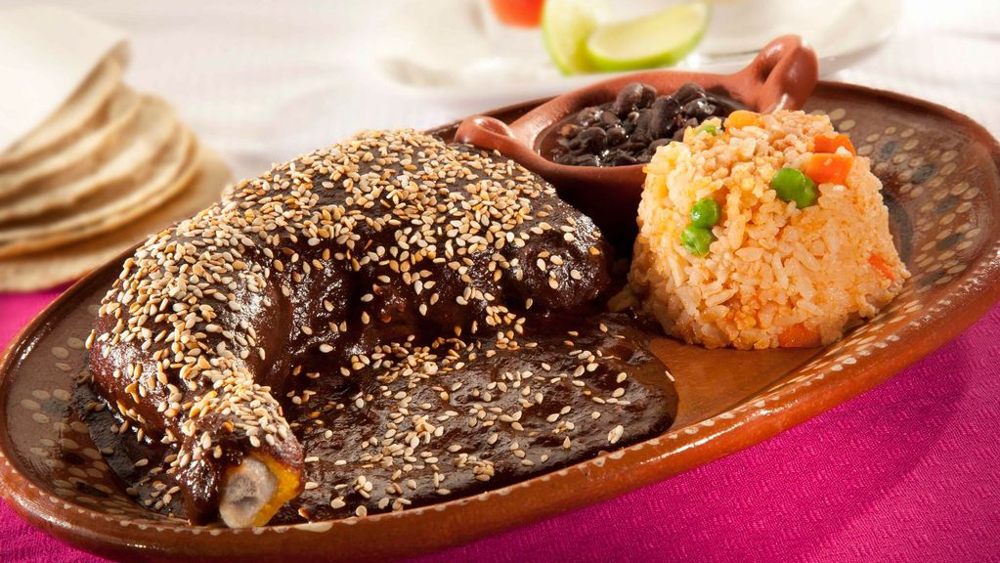
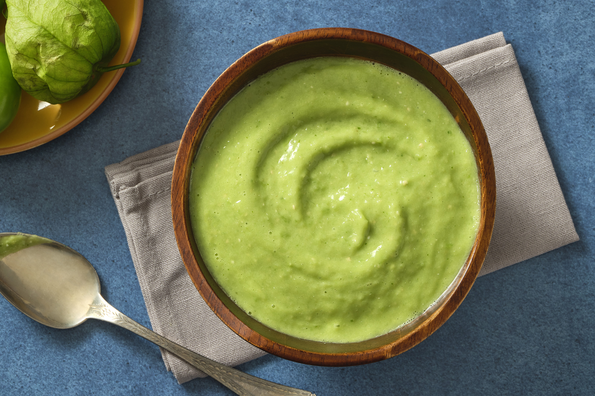
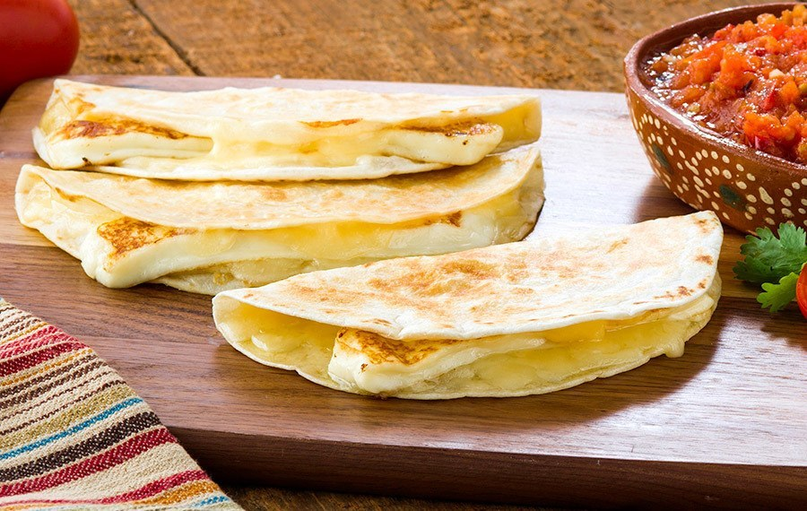
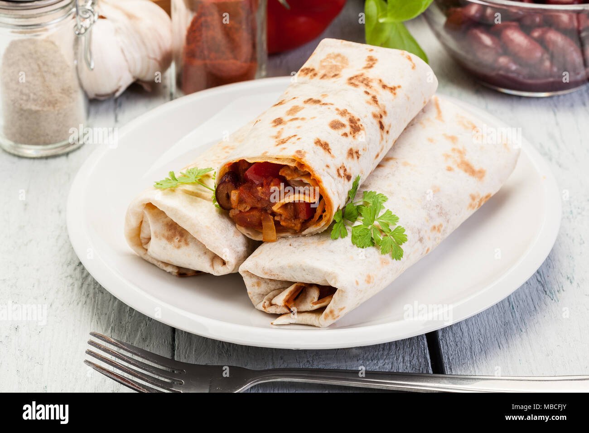
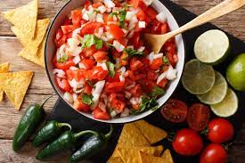
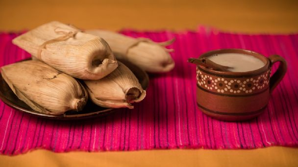

MOLE

El término mole se refiere a varios tipos de salsas mexicanas muy condimentadas hechas principalmente a base de chiles y especias, y que son espesadas con masa de maíz, tortilla o pan; también se refiere a los mismos guisos a base de carne o vegetal que se suelen preparar con estas salsas espesas
El mole es un platillo complejo cuya sofisticación no es improvisada; su evolución ha sido perfeccionándose y enriqueciéndose no solo con ingredientes, sino también con la cultura de cada cocinero o cocinera que ha puesto sus manos para elaborarlo generación tras generación.
RECETA
POZOLE
El pozole es una sopa tradicional mexicana hecha a base de granos de maiz, al cual se agrega carne,verduras y especies variadas segun la region.
Hay diferentes tipos de pozole. Por ejemplo, en el norte de México, suele prepararse con un caldo con chile pasilla o guajillo y carne de res. Algunos agregan pata o pancita para darle un toque diferente. En Guerrero se prepara con una mezcla de mole de pepita verde y carne de cerdo y se sirve tradicionalmente sólo los jueves. En Jalisco, se guisa con cabeza de res y en un caldo con chile guajillo.
RECETA
TACOS

El taco es una preparacion culinaria muy popular de Mexico que consiste en una tortilla, generalmente de maiz,que se dobla o se enrolla para contener dentro diversos ingredientes y algun tipo de salsa.
Los tacos se rellenan básicamente de carnes de cerdo y res, entre estos se encuentran: tacos de tripa, tacos de arrachera, tacos de sesos, tacos de bistec, tacos de suadero, tacos de escamoles y tacos de canasta.
RECETA
ENCHILADAS

Las enchiladas es un platillo MEXICANO,que consiste ser elaborado con tortillas de maiz enrolladas o dobladas,bañadas en salsa.
El platillo tiene su origen en las civilizaciones precolombinas, presente incluso en el Códice Florentino menciona la palabra chillapitzalli, la cual se conforma de la palabra náhuatl chilli, que significa chile, y de tlapitzalli que significa flauta, es decir, flauta enchilada, descrita en el mismo texto como platillo de tortilla y chiles.
RECETA
GUACAMOLE

El guacamole es una salsa mexicana, que consiste en moler Jitomate,ajo,sal,aguacate ychiles.
Proviene del náhuatl 'Ahuacamolli' traducido al español, que se compone de las palabras Ahuacatl (aguacate) + molli (mole o salsa). De acuerdo a la mitología prehispánica de México, el dios tolteca Quetzalcóatl ofreció la receta de este delicioso platillo a todo su pueblo y fue así como se expandió a otros sitios de Mesoamérica.
RECETA
QUESADILLA

La quesadilla es un platillo mexicano que consiste en una tortilla de maiz doblada a la mitad,lleva por dentro queso y salsa.
Aunque se considera al queso como el ingrediente principal, en el área metropolitana de la Ciudad de México las quesadillas pueden contener otros guisados además de queso o, incluso, prescindir de este. De esta manera, en la capital existen, por ejemplo, quesadillas de queso, de picadillo, de huitlacoche, de sesos, flor de calabaza, etc.; mientras que en el resto del país normalmente las quesadillas se preparan usando queso como ingrediente básico e indispensable, conteniendo o no contener ingredientes adicionales.
RECETA
NOPALES
Es un alimento antiguo de mexico,sus caracteristicas se definen que tiene un color verde,una textura dura y un cuerpo espinoso.
Los nopales están ligados a la historia de Mesoamérica de una manera particular como podemos ver en el escudo de la bandera de México, donde figura un águila posada sobre un nopal, símbolo que ha llegado hasta nuestros días del jeroglífico de la Gran Tenochtitlán y que significa “sitio del nopal que crece sobre la piedra”.
RECETA
BURRITOS

El burrito es de origen mexicano,que consiste en una tortilla de trigo enrollada, rellenada con diferentes ingredientes y normalmente suele estar acompañada con frijoles fritos.
La diferencia entre un taco tradicional y un burrito tiene dos cosas a considerar
La principal es que con la tortilla del burrito se forma un rollo para guardar en su interior el contenido, mientras que en el taco funciona como un recipiente abierto.
La otra es la tortilla, ya que el burrito tiene que ser hecho con una tortilla de harina de trigo, mientras que los tacos tradicionalmente son preparados con tortilla de maíz.
RECETA
TOTOPOS
Los totopos son pedasos fritos o tostados de tortilla de maiz y se acompañada con salsas,frijoles,guacamole,etc.
Los totopos tradicionales provienen de las culturas prehispánicas, específicamente del nombre de la acción totopochtli, que en náhuatl significa dorar o tostar. Estos son tostadas de maíz puro cocinadas indirectamente al fuego en recipientes de barro (comal) y sin freír.
RECETA
PICO DE GALLO

Es una salsa o ensala mexicana,que consiste en llevar jitomate,cebolla,cilantron y chile.
Se trata de una de las preparaciones más clásicas de este país, y se encuentra en casi todas las regiones en multitud de variantes.
RECETA
SOPES

Es una comida mexicana,que consiste en una tortilla grusa y ancha (pellizcadas del contorno),suele llevar frijoles,lechuga,queso,crema,etc.
Este platillo es considerado un manjar para las familias mexicanas y representa una parte de la exquisita cultura gastronómica que define a México. Su origen proviene de las raíces del centro y sur del país, que a lo largo de los años se ha pasado de generación en generación.
RECETA
TAMAL ROJO

El tamal es originario de mexicano,que consiste ser una bola larga que contiene adentro carne o queso y salsa,o otro tipo de ingrediente,etc.
La única diferencia del tamal verde, es que el tamal rojo se utiliza como base de chile guajillo.
RECETA